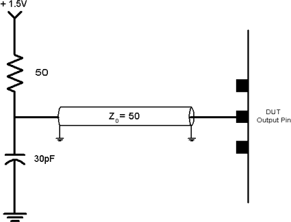
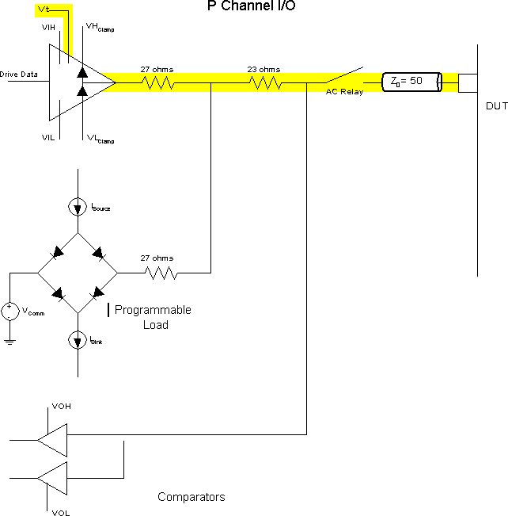

Pin loading
For both DC and AC measurements, it is important to load the outputs of the DUT according to the device data sheet. If the loading is set up incorrectly, the values returned from measurements may be incorrect.
The typical measured DC parameters are pin Leakage Currents, Device Operating and Standby currents, and output V-I parameters such as Voh, Vol, Ioh or Iol. The tester's digital pins are capable of providing the DC parameter loading conditions with measurements using its various Parametric Measurement Units.
Most AC measurements are based on the measurement of the time between two events on one or more pins of the device. If the subject pins of the measurement include output pins of the device, then the output loading is very important. The resulting measurement value can be affected by the output loading. Data sheets always specify a loading condition for the outputs to be used when measuring timing parameters. This is usually defined in the AC Timing section. The most widely-used loading condition is shown in the figure below.

The V93000 test system is able to terminate the outputs with the load shown above. The +1.5 V supply is the termination voltage, Vt. The impedance of the test system channel and load board are designed for 50 ohms. This impedance provides the 50 ohm component of the load shown in the figure above.
The figure below shows a schematic of the input/output electronics for one of the test system's digital channels. Although each digital channel has its own programmable load, which can be used to provide the pull-up voltage given in the loading specification, an improved solution (in which Vt is provided directly by the driver amplifier rather than by the programmable load) is available in the HSM Series test systems. This solution is preferable because it is able to switch faster between Vil, Vih, and Vt than the programmable load can do.

If the programmable load (included in the illustration above) is used, it is enabled and programmed (during level setup) by selecting the "load" termination method. The programmable load circuitry is activated whenever the Driver is in a tri-state condition. The driver is placed in and taken out of tri-state mode by physical waveform actions. The programmable load has three configurable parameters (Vt, ioh, and iol). For the example shown above, the termination voltage Vt should be set to +1.5V. The AC load does not determine what the ioh and iol values should be; those values are chosen by the test engineer. The values chosen will not affect the slew rate of the edges being driven by the device, nor do they affect the measured AC value. However, the quality of the signal can be affected by the values chosen. If the ioh and iol values chosen are too small, the programmable load appears as an open, and signal reflections occur.
Although it is also possible to use the driver's clamp voltages to provide Vt, this is not a recommended method.